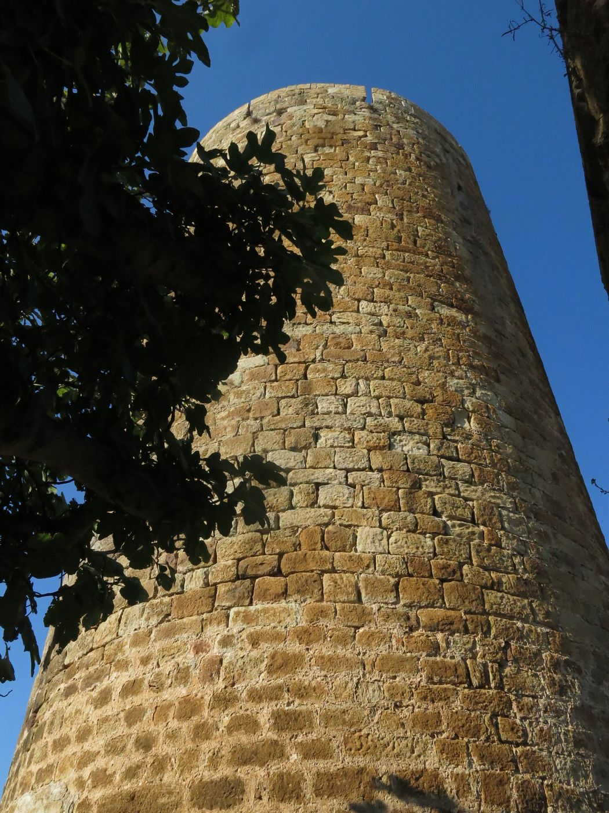
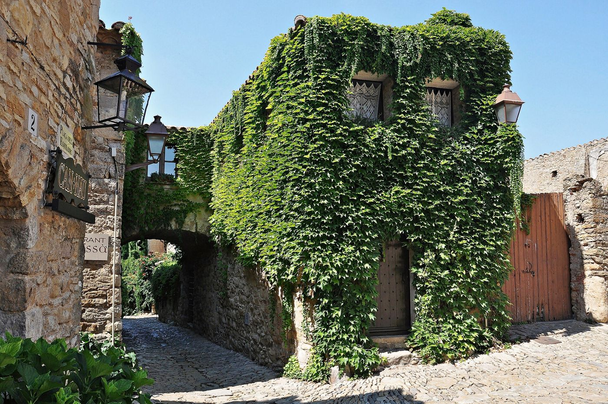
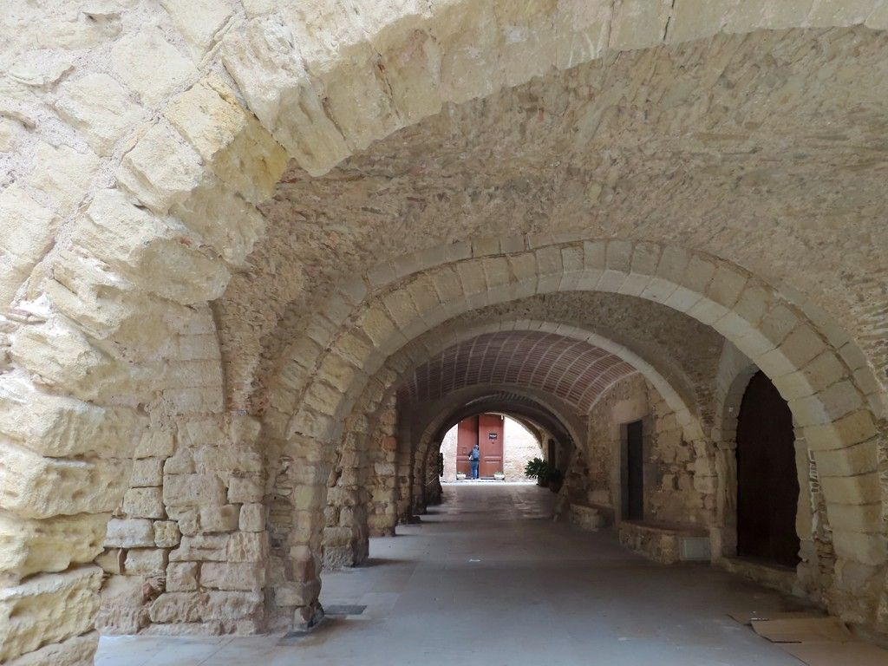
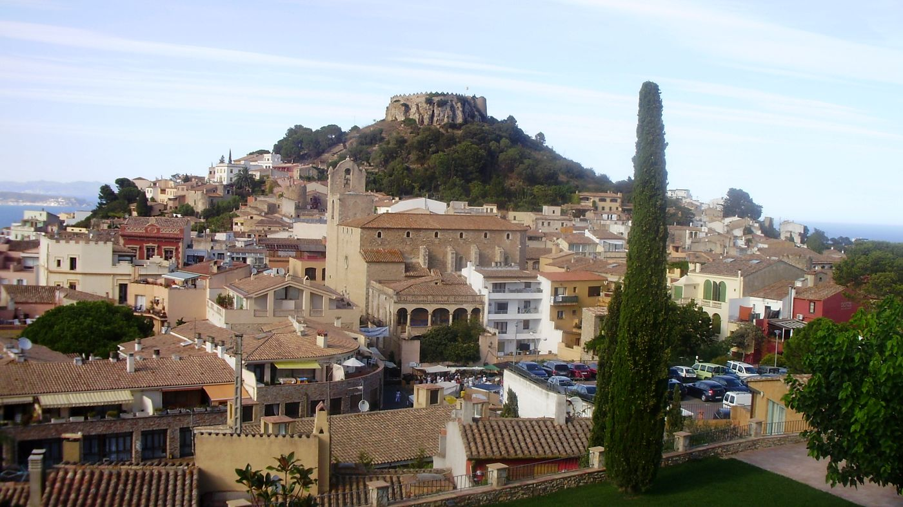
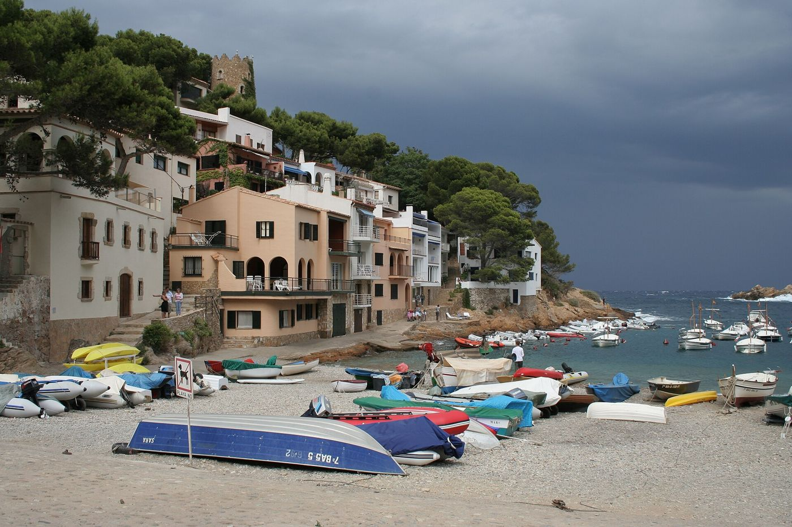
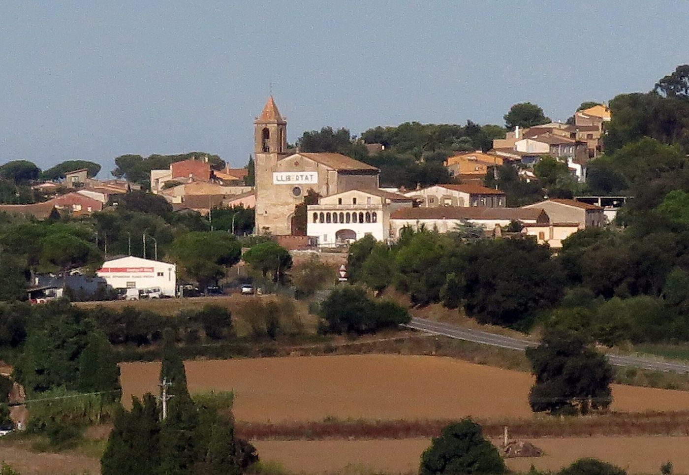

–
Muay thai
Empezamos el día entrenando juntos, sin salir del alojamiento.
- Sesión de muay thai entre los dos.
- Ducharnos y salir hacia Pals.
28·XI·2022 28·XI·2026
Sábado, 28 de noviembre de 2026
Siete páginas para un sábado. Cada parada tiene su hora, unas fotos del lugar y el enlace para llegar en Google Maps.
Los tiempos de trayecto en coche no están calculados aquí: consultadlos en Google Maps esa misma mañana.
Empezamos el día entrenando juntos, sin salir del alojamiento.

Después del entreno, el pueblo medieval de piedra, en lo alto de la colina.


El pueblo más medieval del día, para recorrerlo sin prisa antes de comer.

Del interior a la costa: un pueblo que mira al mar desde su castillo.

Una cala pequeña de casas de pescadores, para el último rato de luz junto al mar.

Una pausa antes de la noche.